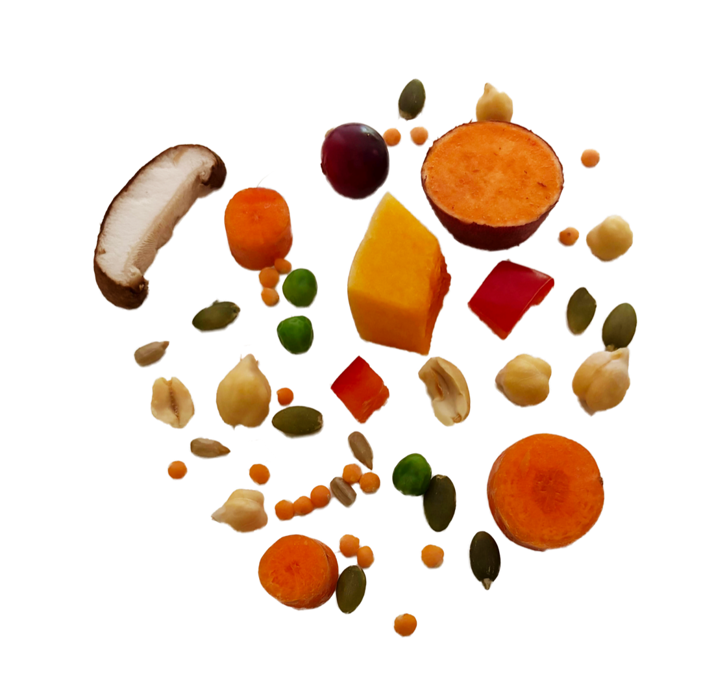
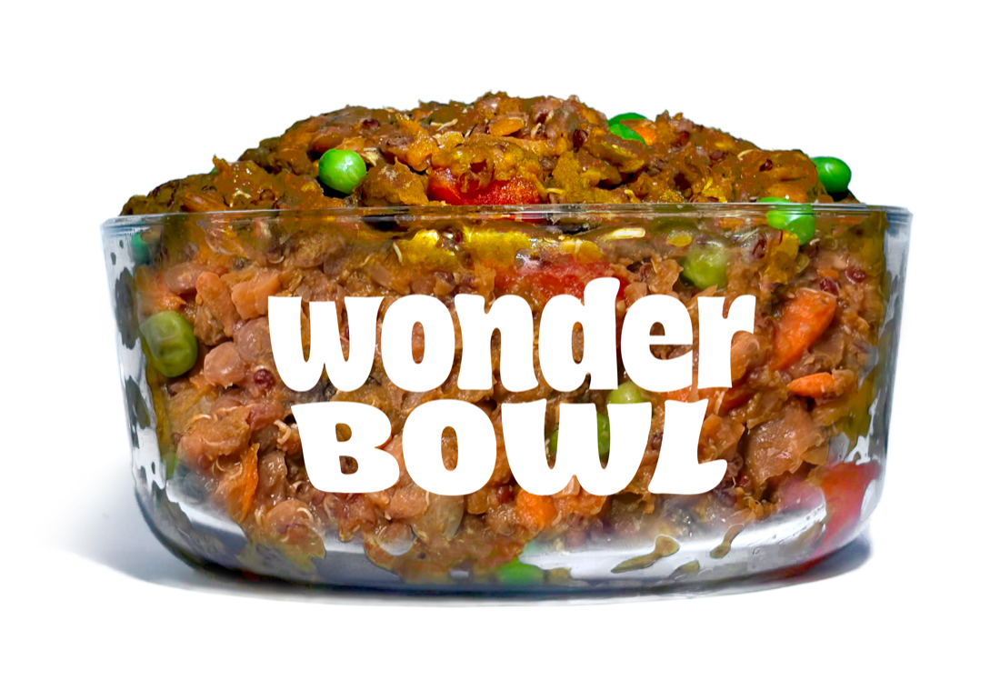
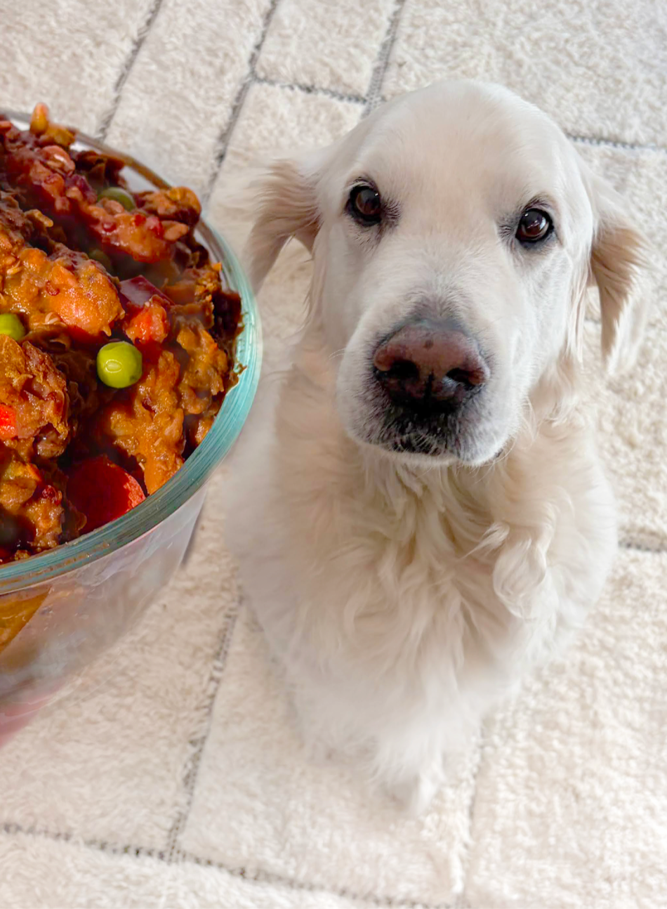
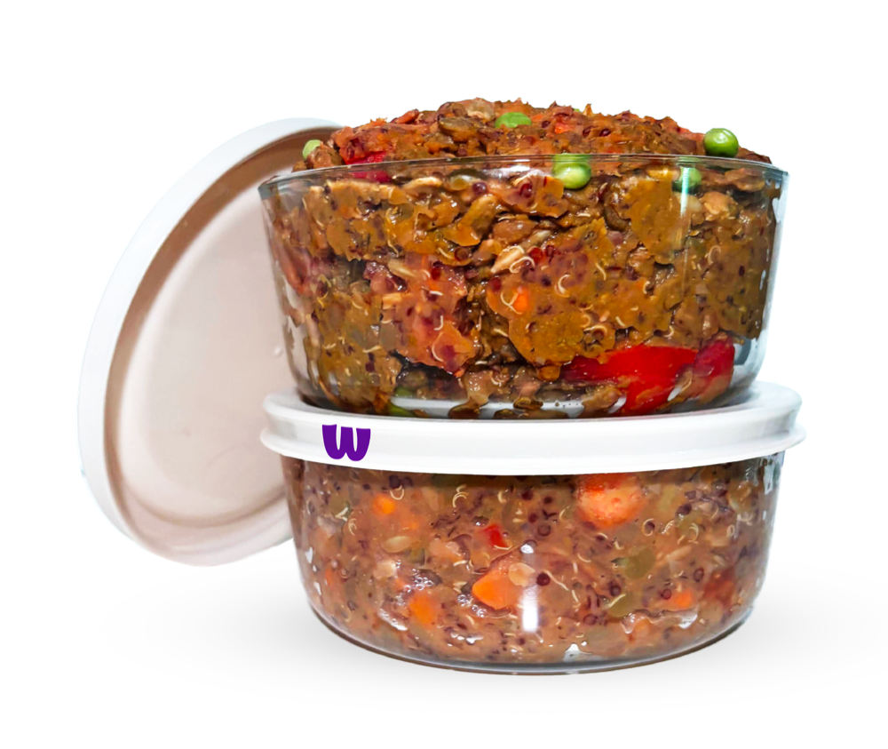
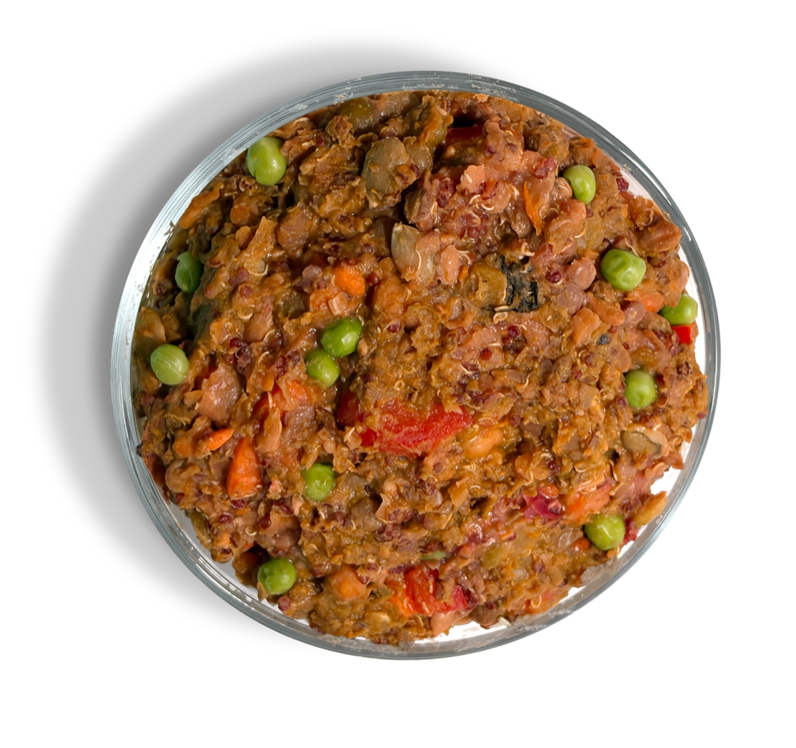

1-Cup Bowl
Small Pup · 0–40 lbs
$2.50: per bowl
Fresh · Vegetarian · San Francisco
Slow-simmered whole super-plants, made fresh in San Francisco this week. From our kitchen to their paws. Get your 3-day sample set in exchange for feedback and a mealtime pic.



Why we started
Wonder Bowl began in a San Francisco kitchen after a scare no dog-parent forgets. We set out to build a bowl that was vibrant, ethical, and genuinely craveable. It's proof that vegetarian food can be the highlight of a dog's day, not a compromise.
Launch pricing
During our early local test we're waiving all retail margin. You only pay for raw organic ingredients, packaging, and local SF prep. In return, all we ask is your honest feedback and a photo of your pup at mealtime.
1-Cup Bowl
Small Pup · 0–40 lbs
$2.50: per bowl
2-Cup Bowl
Medium Dog · 41–70 lbs
$4.00: per bowl
3-Cup Bowl
Large Woofer · 71+ lbs
$5.50: per bowl
Every set is 6 portions across 3 days · At-cost · SF delivery only.
Ready for a larger or weekly delivery?
Inside the bowl
Garden to Bowl. No Detours.
A rich, earthy stew packed with 16 nutrient-dense super-plants. High-protein, meat-free whole ingredients you can actually see and recognize, never mystery brown paste or deep-frozen bricks.
Every one of the 37 nutrients AAFCO sets for adult maintenance, measured against the requirement. Values are per 1,000 kcal of metabolisable energy.
| Nutrient | Our recipe | AAFCO Requirement | How we compare |
|---|---|---|---|
| Macronutrients | |||
| Crude protein | 63.8 g 24% DM | 45 g min | 142% |
| Linoleic acid | 12.5 g | 2.8 g min · no max | In range |
| Crude fat | 45.5 g 17% DM | 13.8 g min · no max | In range |
| Amino acids | |||
| Arginine | 5.35 g | 1.28 g min | 418% |
| Histidine | 1.59 g | 0.48 g min | 331% |
| Isoleucine | 2.67 g | 0.95 g min | 281% |
| Leucine | 4.48 g | 1.7 g min | 264% |
| Lysine | 3.8 g | 1.58 g min | 241% |
| Methionine | 1.02 g | 0.83 g min | 123% |
| Methionine + cystine | 1.93 g | 1.63 g min | 118% |
| Phenylalanine | 3.04 g | 1.13 g min | 269% |
| Phenylalanine + tyrosine | 4.86 g | 1.85 g min | 263% |
| Threonine | 2.28 g | 1.2 g min | 190% |
| Tryptophan | 0.733 g | 0.4 g min | 183% |
| Valine | 3.12 g | 1.23 g min | 254% |
| Minerals | |||
| Calcium | 1.7 g | 1.25–6.25 g | In range |
| Phosphorus | 1.32 g | 1–4 g | In range |
| Potassium | 2.57 g | 1.5 g min · no max | In range |
| Sodium | 0.285 g | 0.2 g min · no max | In range |
| Magnesium | 0.453 g | 0.15 g min · no max | In range |
| Iron | 16.4 mg | 10 mg min | 164% |
| Copper | 2.79 mg | 1.83 mg min · no max | In range |
| Manganese | 5.23 mg | 1.25 mg min · no max | In range |
| Zinc | 30.6 mg | 20 mg min | 153% |
| Iodine | 0.295 mg | 0.25–2.75 mg | In range |
| Selenium | 0.097 mg | 0.08–0.5 mg | In range |
| Vitamins | |||
| Vitamin A | 2,782 IU | 1,250–62,500 IU | In range |
| Vitamin D | 177.6 IU | 125–750 IU | In range |
| Vitamin E | 15.3 IU | 12.5 IU min · no max | In range |
| Thiamine (B1) | 4.99 mg | 0.56 mg min · no max | In range |
| Riboflavin (B2) | 4.28 mg | 1.3 mg min · no max | In range |
| Niacin (B3) | 25.3 mg | 3.4 mg min · no max | In range |
| Pantothenic acid (B5) | 8.62 mg | 3 mg min · no max | In range |
| Pyridoxine (B6) | 3.8 mg | 0.38 mg min · no max | In range |
| Folic acid | 0.974 mg | 0.054 mg min · no max | In range |
| Vitamin B12 | 0.028 mg | 0.007 mg min | 400% |
| Choline | 565 mg | 340 mg min · no max | In range |
Built for a gentle transition
Switching dog food overnight can upset doggy digestion. That's why your sample set comes with a glass bowl, making it easy for you to mix in your pup's current food. Safe, easy, and completely gut-friendly.
Delivered half-filled with our fresh Classic Wonder Bowl recipe. A keepsake, not landfill.
6 meals total for a full 3-day transition, in compostable packaging.
They'll never tell you their food is boring. We will.
Past the taste test
Pup a fan? Get a fresh batch or a weekly delivery that turns up without you thinking about it.
A weekly order saves 20%
Good boys deserve good food
Commercial pet food uses heavy rendered meats that create a stale, unpleasant odor. Wonder Bowl is hand-simmered with whole superfoods like lentils, chickpeas, squash, and shiitake mushrooms, giving it a clean, delicious, human-grade aroma. Good boys deserve good food.
One bowl, zero moral gymnastics. Grown beats processed, any day. Modern science confirms that dogs evolved alongside humans to digest plant proteins and thrive on plant-based nutrients. Fresh veggies deliver cleaner daily energy, smoother digestion, and radiant coat health, all while sparing other animals.
Fresh, hand-simmered dog food made from whole superfoods. Our Classic Wonder Bowl recipe features lentils, chickpeas, shiitake mushrooms, carrots, squash, cranberries, and essential plant oils. No fillers, no animal by-products, and zero artificial preservatives. Want to cook one yourself? Ping us at hello@wonder-bowl.com and we'll send the recipe.
Yes! Every batch is formulated alongside veterinary nutritionists to meet and exceed AAFCO standards for adult dog maintenance: all essential amino acids, Omega-3 & 6 fatty acids, B12, and bioavailable minerals your dog needs to thrive.
Right here in San Francisco! From our kitchen to their paws. We simmer fresh in local kitchens each week. Unlike commercial brands that freeze meals for months in distant warehouses, our food is delivered locally within days of cooking.
You receive 1 reusable glass bowl (filled 50%) and 5 paper refill containers, 6 meals total across 3 days. To prevent tummy upset, top off the glass bowl with 50% of your dog's current food. This 50/50 mix provides a gentle 3-day transition taste test.
Once you submit, we deliver your sample set directly to your SF door. After your dog tries the food, we email a short 2-minute survey for your feedback and mealtime photos. Launch testers also lock in an exclusive discount when our full subscription service officially launches!
We want your dog’s transition to fresh plant meals to be completely worry-free! Because our meals are hand-simmered fresh in local San Francisco kitchens, we cannot accept physical returns of perishable food. However, under our 3-Day Taste Test Guarantee, if your dog refuses to eat the food during your transition test or if your package arrives damaged, simply email us at help@wonder-bowl.com within 7 days of delivery. We will promptly issue a full refund back to your original payment method—no hard feelings.
Pick a day. We'll handle delivery.

At-cost · SF delivery only · Limited beta batches

The Taste Test
Tell us a little about your pup so we can portion their 3-day welcome set perfectly.
Thanks, friend! We're sending your pup's 3-day set to you. We'll hand you to Stripe to finish your at-cost order.
Redirecting to secure checkout…
Standing order
Pick a rhythm. You’ll choose bowl sizes and how many packs on the next step.
Larger orders open in a few days. Email hello@wonder-bowl.com and we’ll set yours up by hand.
Two bowls a day · Pause or cancel anytime · SF delivery only · Secure checkout via Stripe
Standing order
Last step before checkout — then you just pick bowls and pay.
Rhythm Every week